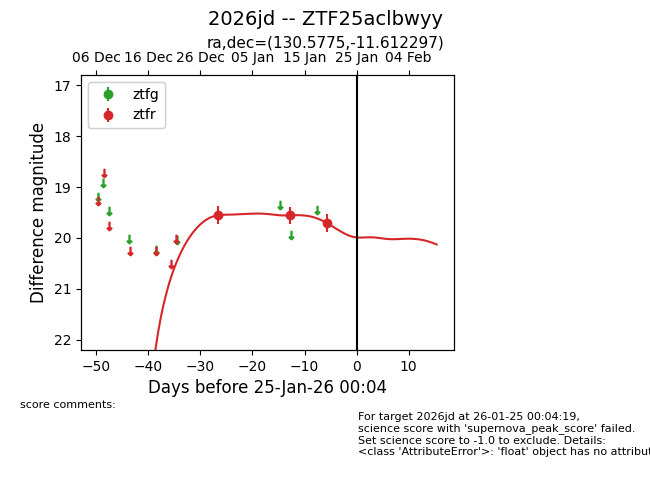
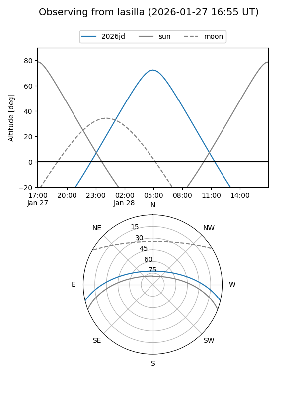
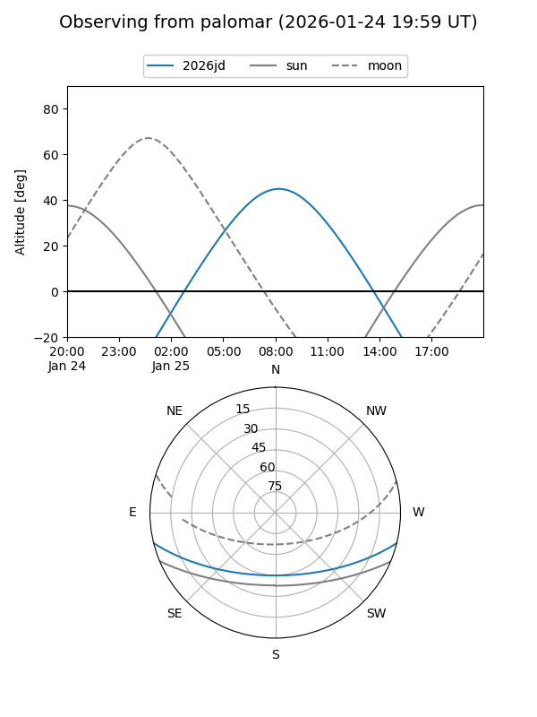
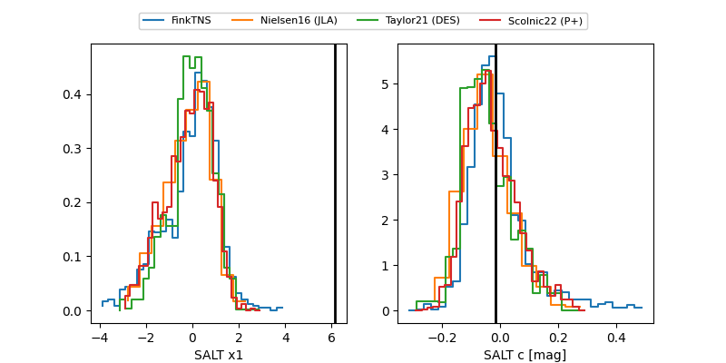

2026jd
Target 2026jd at 2026-01-27 00:56
Aliases and brokers:
FINK: link
Lasair: link
ALeRCE: link
TNS: link
YSE: link
alt names
ZTF25aclbwyy (ztf,fink_ztf)
2026jd (tns,yse)
Coordinates:
equatorial (ra, dec) = 130.5775,-11.61230
equatorial (HMS+DMS) = 08:42:18.60,-11:36:44.27
galactic (l, b) = (236.9771,+18.28203)
Flags:
Photometry:
last ztfr=19.71
3 ztfr detections
Lightcurve

Visibility


Additional plots
